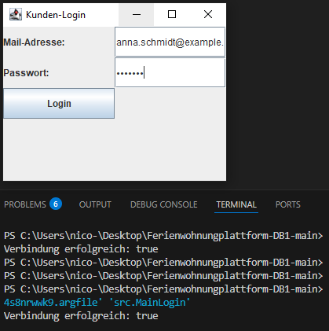
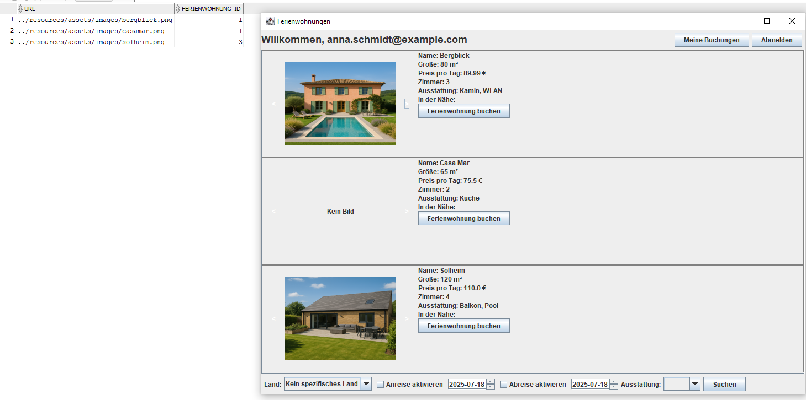
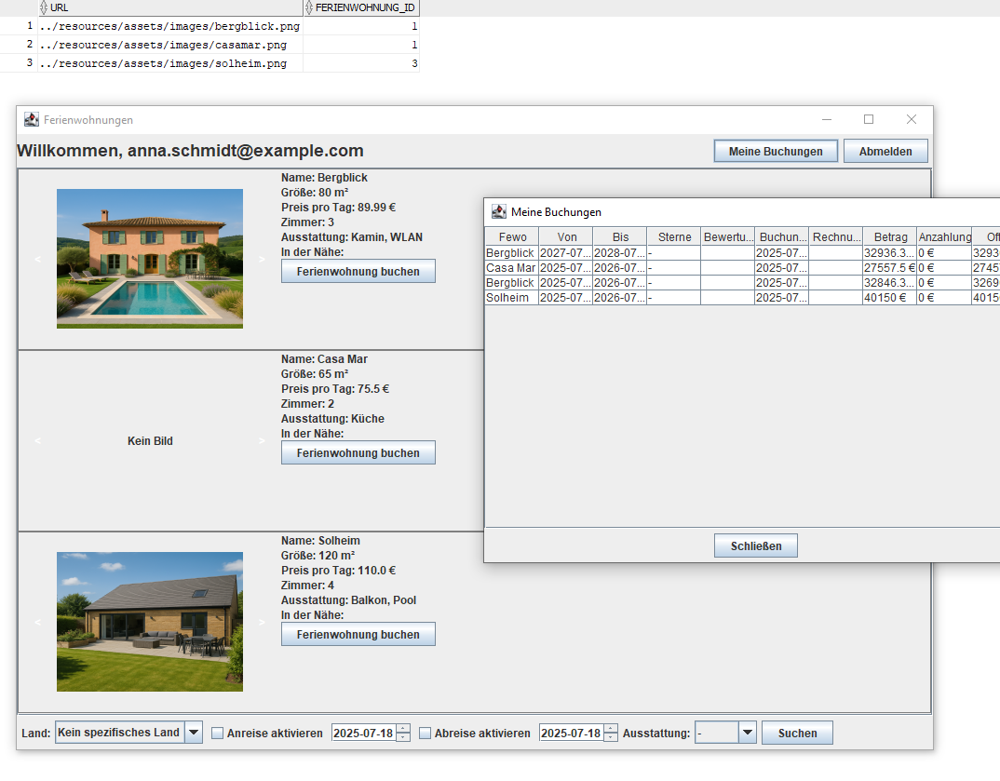
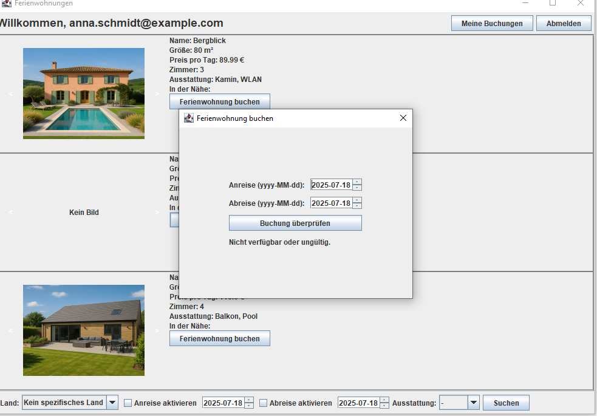
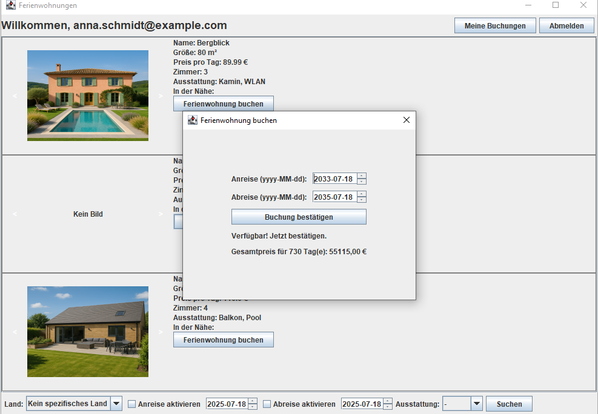

Datenbanken Zusammenfassung
Allgemein
Auf GitHub lässt sich ein kleines Projekt von mir finden das ich in der letzten Übungsaufgabe im Auftrag dieser Lehrveranstaltung gemacht habe
Link zum Projekt auf Github
Das stellt eine ganz primitive GUI dar mit der man sich einloggen kann und dann eine Liste aller der Datenbank hinzugefügten Ferienwohnungen bekommt. Ich sage primitiv weil der Login ganz simple gehalten ist.
Passwörter werden nicht gehashed.
Es wird keine Sessions erstellt usw.
Es ist simple aber dafür gut strukturiert gebaut. Schnell verständlich und gut erweiterbar wenn man denn Bedarf dazu hat.
-
Loginbereich für Kunden. Eingabe wird mit Daten aus der Datenbank abgeglichen

-
Bilder URL werden dynamisch aus der DB geladen damit die Verknüpfung zwischen Ferienwohnugeinträge und Bildern erhalten bleibt.

-
Einsicht in meine Buchungen wurde integriert und ruft die Buchungen des jeweiligen Kunden aus der Datenbank

-
Buchungen werden erst überprüft ob es überhaupt zu dem Zeitpunkt verfügbar ist, falls nicht dann bekommt man dafür ebenfalls eine Benachrichtigung

-
Falls verfügbar ändert sich der Button und man kann die Buchung bestätigen zu dem Zeitraum

Schlüsselübersicht
| Schlüsseltyp |
SQL-Definition |
Zweck |
| Primärschlüssel |
PRIMARY KEY |
Der eine ausgewählte Kandidatenschlüssel. Eindeutig + nicht NULL. |
| Kandidatenschlüssel |
UNIQUE |
Jede minimale Attributkombination, die die Zeilen eindeutig identifiziert. (Eindeutige Optionen) |
| Superschlüssel |
nicht explizit definiert |
Jede Attributkombination, die eindeutig ist (auch mit überflüssigen Spalten). |
| Fremdschlüssel |
FOREIGN KEY REFERENCES |
Verbindung zwischen Tabellen |
CREATE TABLE Student (
matrikelnummer INT PRIMARY KEY,
name VARCHAR(100)
);
CREATE TABLE Student (
matrikelnummer INT PRIMARY KEY,
email VARCHAR(100) UNIQUE,
name VARCHAR(100)
);
CREATE TABLE Anmeldung (
student_email VARCHAR(100),
kursID INT,
FOREIGN KEY (student_email) REFERENCES Student(email)
);
| Textaussage |
Hinweis auf |
Beziehungstyp |
| „Ferienwohnungen befinden sich in einem bestimmten Land …“ |
„eine“ Land → viele Wohnungen |
1:n (Land → Ferienwohnung) |
| „… und haben eine Adresse“ |
„eine“ Adresse → viele Wohnungen |
1:n (Adresse → Wohnung) |
| „… mehrere Bilder von der Ferienwohnung abgelegt werden“ |
eine Wohnung → mehrere Bilder |
1:n (Wohnung → Bild) |
| „… deren Ausstattungen gespeichert werden (z.B. Sauna, …)“ |
viele Wohnungen ↔ viele Ausstattungen |
n:m |
| „… Entfernung zu einigen nahegelegenen Touristenattraktionen …“ |
mehrere Wohnungen ↔ mehrere Attraktionen |
n:m |
| „Kunden können Ferienwohnungen buchen“ |
Kunde ↔ Ferienwohnung über Buchung |
n:m, mit Beziehungstabelle „Buchung“ |
| „… erhalten Kunden eine Buchungsnummer …“ |
eine Buchung hat genau eine Nummer |
1:1 (Buchung → Buchungsnummer) |
| „… eine Rechnung mit Rechnungsnummer, Datum, Betrag“ |
eine Buchung → eine Rechnung |
1:1 (Buchung → Rechnung) |
| „… in Rechnungen können ein oder mehrere Anzahlungen vereinbart werden“ |
eine Rechnung → mehrere Anzahlungen |
1:n |
| „… Kunden bewerten eine Ferienwohnung“ |
Kunde ↔ Wohnung durch Bewertung |
n:m, aber nur nach Buchung erlaubt |
| „… Mitarbeiter … sollen Daten pflegen können“ |
Zugriff auf alles - eher keine Beziehung, eher Rollenmodell |
|
ER-Modell → Relationenmodell - Übersichtstabelle
| ER-Modell-Element |
Wird im Relationenmodell zu … |
Beispiel |
| Entity-Typ |
Eigene Relation |
Student = (matrikelnr==, name, geburtsdatum}) |
| 1:1-Relationship |
Entweder: eine Relation für beide Seiten oder Fremdschlüssel |
Person(ausweisnr, name, geburtsdatum, gültigBis) |
| 1:n-Relationship |
Fremdschlüssel auf „n“-Seite |
Mitarbeiter(manr, name, abtnr) ← abtnr ist FK auf Abteilung |
| n:m-Relationship |
Eigene Relation mit 2 Fremdschlüsseln |
Besucht = ({==matrikelnr==, ==vorlID) |
| n-äre Relationship (n > 2) |
Eigene Relation mit n Fremdschlüsseln |
Liefert = (lnr==, ==tnr==, ==fnr==, menge}) |
| Einfaches Attribut |
Normales Attribut in der Relation |
preis, name, geburtsdatum |
| Zusammengesetztes Attribut |
Aufgeteilt in mehrere einfache Attribute |
adresse(plz, ort, strasse) → plz, ort, strasse |
| Mehrwertiges Attribut |
Eigene Relation mit Fremdschlüssel zur Ursprungstabelle |
Telefon = ({==matrikelnr==, ==telnr) |
| Schlüsselattribut |
Primärschlüssel (unterstrichen) oder ggf. zusätzlicher UNIQUE-Schlüssel |
Student = ({==matrikelnr==, name}) |
| Symbol / Aufbau |
Bedeutung |
{A1, A2, ..., An} |
Attributmenge |
Unterstrich _Attribut_ |
Primärschlüssel |
Zweite {}-Menge |
Funktionale Abhängigkeiten oder leer |
| n:m-Beziehung |
Eigene Relation, kombinierter Schlüssel |
| Mehrwertige Attribute |
Ausgelagert in eigene Relation |
| Fremdschlüssel |
Gestrichelt |
1. Grundstruktur von SELECT-Abfragen
SELECT spalten
FROM tabelle
[JOIN andere_tabelle ON bedingung]
[WHERE filter_bedingung]
[GROUP BY gruppierung]
[HAVING gruppenbedingung]
[ORDER BY sortierung [ASC|DESC]];
2. Wichtige Aggregatsfunktionen
| Funktion |
Beschreibung |
Beispiel |
COUNT(*) |
Zählt alle Zeilen |
COUNT(*) |
COUNT(spalte) |
Zählt nur NICHT-NULL Werte |
COUNT(b.Sterne) |
SUM(spalte) |
Summiert numerische Spalten |
SUM(PreisProTag) |
COUNT(DISTINCT spalte) |
SELECT COUNT(DISTINCT kundennr) FROM Bestellung |
Zählt einmal pro Wert (ohne Duplikate) |
AVG(spalte) |
Durchschnitt (ign. NULL) |
AVG(b.Sterne) |
MIN(spalte) |
Kleinster Wert |
MIN(PreisProTag) |
MAX(spalte) |
Größter Wert |
MAX(Sterne) |
DESC / ASC |
Absteigend / aufsteigend sortieren |
ORDER BY COUNT(*) DESC |
DISTINCT |
Entfernt Duplikate - oft in COUNT(DISTINCT ...) |
COUNT(DISTINCT marke) |
LIMIT n |
Beschränkt auf n Zeilen (nicht in allen Dialekten) |
LIMIT 1 (nur Top 1) |
3. Joins (Tabellen verknüpfen)
-- Inner Join (nur passende Zeilen)
SELECT ...
FROM A
JOIN B ON A.id = B.a_id;
-- Left Join (auch Zeilen aus A ohne Treffer in B)
SELECT ...
FROM A
LEFT JOIN B ON A.id = B.a_id;
Beispiel:
SELECT f.Name, a.Land
FROM Ferienwohnung f
JOIN Adresse a ON f.ADRESSE_ID = a.ID;
4. GROUP BY + HAVING - Gruppieren & Filtern
-- Durchschnitt pro Wohnung (nur bei Bewertungen > 4)
SELECT FERIENWOHNUNG_ID, AVG(Sterne)
FROM Buchung
GROUP BY FERIENWOHNUNG_ID
HAVING AVG(Sterne) > 4;
GROUP BY: gruppiert Zeilen (z. B. pro Kunde, Wohnung, Land)HAVING: filtert Gruppen (wie WHERE, aber nach Gruppierung)
5. NOT IN vs. NOT EXISTS (um „nicht enthaltene“ Fälle zu finden)
Ferienwohnungen ohne Buchungen
SELECT *
FROM Ferienwohnung f
WHERE NOT EXISTS (
SELECT 1 FROM Buchung b WHERE b.FERIENWOHNUNG_ID = f.ID
);
Oder auch:
SELECT *
FROM Ferienwohnung f
WHERE NOT EXISTS (
SELECT 1 FROM Buchung b WHERE b.FERIENWOHNUNG_ID = f.ID
);
Merke:
- Verwende
WHERE zum Filtern von einzelnen Zeilen
- Verwende
HAVING nur, wenn du GROUP BY verwendest
Überblick: Arten von JOINs
| JOIN-Typ |
Was er macht |
Gibt Zeilen aus, wenn ... |
| INNER JOIN |
Nur übereinstimmende Zeilen in beiden Tabellen |
Match vorhanden in beiden Tabellen |
| LEFT OUTER JOIN |
Alle Zeilen aus der linken Tabelle, plus passende aus rechts |
Immer alles von links, ggf. NULLs von rechts |
| RIGHT OUTER JOIN |
Alle Zeilen aus der rechten Tabelle, plus passende aus links |
Immer alles von rechts, ggf. NULLs von links |
| FULL OUTER JOIN |
Alle Zeilen aus beiden Tabellen - auch wenn keine Übereinstimmung |
Zeigt alle, fehlende Daten als NULL (nicht in MySQL |
| a |
b |
c |
d |
| 9 |
4 |
NULL |
NULL |
| 15 |
16 |
NULL |
NULL |
| 77 |
16 |
9 |
77 |
| a |
b |
c |
d |
| 77 |
16 |
9 |
77 |
| NULL |
NULL |
4 |
4 |
| NULL |
NULL |
9 |
16 |
| a |
b |
c |
d |
| 9 |
4 |
NULL |
NULL |
| 15 |
16 |
NULL |
NULL |
| 77 |
16 |
9 |
77 |
| NULL |
NULL |
4 |
4 |
| NULL |
NULL |
9 |
16 |
| NF |
Bedingung |
Verletzung |
Beispielrelation (Fehler) |
Ziel / Lösung |
|
| 1NF |
Alle Werte atomar |
Listen, Mengen |
Student(matrikelnr, name, {telefon}) → Mehrere Nummern in 1 Zelle |
Telefon(matrikelnr, telnr) als eigene Relation |
|
| 2NF |
Nicht-Schlüsselattribute sind voll abhängig vom gesamten Primärschlüssel |
Partielle Abhängigkeit |
Belegung(matrikelnr, kursID, name) → name hängt nur von matrikelnr ab |
Trennen: Student(matrikelnr, name), Belegung(matrikelnr, kursID) |
|
| 3NF |
Keine transitive Abhängigkeit zwischen Nicht-Schlüsselattributen |
Transitive Abhängigkeit |
Studiengang(stgID, name, fakultät) → name → fakultät |
Trennen: Studiengang(stgID, name), Fakultät(name, fakultät) |
|
| BCNF |
Für jede FA X → Y ist X ein Superschlüssel |
Nicht-Superschlüssel bestimmt etwas |
Kurs(kursID, raum, dozentID) mit dozentID → raum aber dozentID ist kein Superschlüssel |
Zerlegen nach dozentID → raum: eigene Relation |
|
Arten von Funktionalen Abhängigkeiten
Typische Keywords, die FAs andeuten:
| Ausdruck |
Bedeutet wahrscheinlich |
| „eindeutig“ → |
Linksseitiger Determinant einer FA |
| „immer derselbe“ → |
Abhängigkeit (funktional!) |
| „hat eine feste ...“ → |
rechtsseitige Abhängigkeit |
| „eine Note pro ...“ → |
Mehrattributige Determinante |
| „Primärschlüssel ist ...“ → |
Startpunkt für alle FAs |
| Art |
Beschreibung |
Beispiel |
| Volle Abhängigkeit |
X → Y, aber keine Teilmenge von X bestimmt Y |
(A, B) → C, aber A → C |
| Partielle Abhängigkeit |
Nur ein Teil eines Schlüssels bestimmt Y |
A → C, wenn Schlüssel (A, B) |
| Transitive Abhängigkeit |
X → Y und Y → Z → also X → Z, aber über Umweg |
matrikelnr → studiengang → fakultät |
| Triviale Abhängigkeit |
Y ⊆ X → immer erfüllt |
A, B → B |
| Mehrwertige Abhängigkeit (MVD) |
X ↠ Y, wenn mehrere Werte für Y unabhängig von anderen Attributen |
4NF-Thema |
FA bestimmen:
(Etwas Eindeutiges bestimmt etwas Nicht-Eindeutiges)
(Eindeutiges -> Nicht Eindeutig)
- benotung-ID-> matrikelnummer, vorlesungsnummer, semester, studierendenname, vorlesungsname, hörsaal, anzSitze, note
- martrikelnummer->studierendenname
- vorlesungsnummer->vorlesungsname
- (vorlesungsnummer,semester)->hörsaal
weil:
"Eine Vorlesung findet innerhalb eines
Semesters immer im gleichen Hörsaal statt."
- hörsaal->anzSitze
- (martrikelnummer,vorlesungsnummer,semester)->note
{kind=link}
{kind=link}
{kind=link}
{kind=link}
{kind=link}